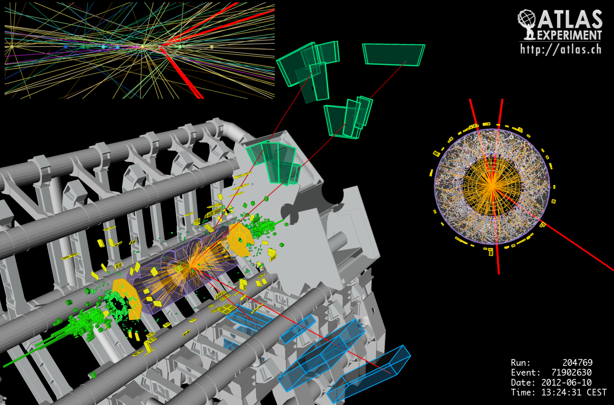

Select a particle to explore its properties
The Standard Model
17 particle types — but quarks come in 3 colors and gluons in 8 varieties. Counted with all quantum states: 61 distinct particles.
Gen I
Gen II
Gen III
Quarks — feel all four forces
Leptons — electrons and neutrinos
Gauge Bosons — force carriers
Scalar Boson — gives mass
Quarks
Charged Leptons
Neutrinos
Gauge Bosons
Higgs
Antimatter — the Mirror World
Every fermion has an antiparticle with opposite charge and quantum numbers. Some bosons are their own antiparticle.
Antiquarks — opposite charge, opposite color
Anti-leptons — positron & friends
Self-conjugate — its own antiparticle
W⁺ and W⁻ are each other's antiparticle. Gluons carry color-anticolor pairs, effectively being their own anti-family.
6×3
Quarks
flavor × color
flavor × color
+
6×3
Antiquarks
flavor × anticolor
flavor × anticolor
+
6
Leptons
+ 6 anti
+ 6 anti
+
8
Gluons
color combos
color combos
+
4
EW bosons
W±, Z⁰, γ
W±, Z⁰, γ
+
1
Higgs
=
61
Quantum states
🎨 Color Charge — the "Strong" Rainbow
Quarks carry one of three "color charges" (nothing to do with visible color) — red, green, blue. Antiquarks carry anti-red, anti-green, anti-blue. Only colorless combinations exist in nature: R+G+B (baryon) or C+C̄ (meson).
u
u
d
Proton (colorless: R+G+B)
u
d̄
π⁺ meson (color+anticolor)
Gluons carry a color and an anticolor at once — giving 8 octet gluon states; the ninth color-anticolor combination is a separate singlet, not part of the QCD gauge field. Gluon color charge causes self-interaction and quark confinement.
Build the Universe
Drag quarks and electrons into the assembly zone. Watch protons, neutrons, and atoms come to life.
Parts
Gen I quarks
u up · +⅔
d down · −⅓
ū anti-up · −⅔
d̄ anti-down · +⅓
Heavy quarks
s strange · −⅓
s̄ anti-s · +⅓
c charm · +⅔
c̄ anti-c · −⅔
b bottom · −⅓
b̄ anti-b · +⅓
t top · +⅔
t̄ anti-top · −⅔
Charged leptons
e⁻ electron · −1
e⁺ positron · +1
μ⁻ muon · −1
μ⁺ antimuon · +1
τ⁻ tau · −1
τ⁺ antitau · +1
Neutrinos
νₑ electron neutrino
ν̄ₑ electron antineutrino
νμ muon neutrino
ν̄μ muon antineutrino
ντ tau neutrino
ν̄τ tau antineutrino
Tip: 2u+1d = proton · 1u+2d = neutron · qq̄ = meson (π, K, J/ψ…) · proton+e⁻ = hydrogen
Drop parts here — watch forces & composites form
strong (gluon)
EM attract (photon)
EM repel (photon)
Teaching schematicQuarks, force lines, distances, and electron motion are not to scale. The builder tracks composition and charge, not real-time hadronization.
You built:
Nothing yet.
The Four Fundamental Forces
Every interaction in the universe is one of these four.
Strong Force
Carrier: Gluon (g)
Relative strength: 1 (strongest)
Range: ~10⁻¹⁵ m (nucleus-size)
Binds quarks into protons/neutrons and holds the nucleus together. Gets stronger as quarks separate — you can never pull one out alone (confinement).
Example: three quarks glued into a proton.
Electromagnetism
Carrier: Photon (γ)
Relative strength: 1/137
Range: infinite
Governs charged particles. Responsible for light, chemistry, magnets, electricity, and every solid surface you touch.
Example: electron orbiting a proton = hydrogen atom.
Weak Force
Carriers: W±, Z⁰ bosons
Relative strength: 10⁻⁶
Range: ~10⁻¹⁸ m
Changes one flavor of quark or lepton into another. Powers radioactive beta decay and the fusion reactions inside the Sun.
Example: neutron → proton + electron + antineutrino.
Gravity
Carrier: Graviton? (hypothetical)
Relative strength: 10⁻³⁹
Range: infinite
By far the weakest, but it always attracts and never cancels — so at cosmic scales it dominates. Not yet part of the Standard Model.
Example: the Earth orbits the Sun.
Common Interactions
Time flows left → right. Straight lines are fermions, wavy lines are photons, curly lines are gluons, dashed lines are W/Z/Higgs.
Force Carrier Exchange
How each fundamental force is transmitted between particles by its mediator.
Less Common / High-Energy
Rarer processes seen in colliders, cosmic rays, or the early universe.
Physics Lab
Ten hands-on visualisations that make the deepest ideas of the Standard Model tangible.
1 · Colour confinement
strong forceA qualitative string-breaking analogy; pixel distances and displayed energies are not a lattice-QCD calculation.
quark
antiquark
flux tube
2 · Inside a collider detector
ATLAS / CMS styleA simplified detector cross-section showing typical signatures rather than full detector response.
What do these detector layers measure?
Tracker: silicon sensors record points along charged-particle paths; curvature in a magnetic field gives momentum and charge sign.
ECAL: electrons and photons make electromagnetic showers, allowing their energy to be measured.
HCAL: hadrons produce broader nuclear showers; clustered deposits are reconstructed as jets.
Muon system: muons penetrate the calorimeters and leave hits in the outer chambers.
Missing transverse momentum: an imbalance inferred from everything detected; it can indicate neutrinos, detector gaps, or mismeasurement.

3 · The Higgs field: why mass exists
Higgs mechanismAn educational coupling analogy, not a microscopic simulation of the Higgs field.
4 · Feynman diagram builder
interaction verticesSchematic perturbative diagrams encode fields and couplings, not literal trajectories or calculated amplitudes.
5 · Decay chain sandbox
branching ratiosRounded PDG branching fractions are sampled stochastically; explicit other channels complete each distribution and animation time is compressed.
6 · Neutrino oscillation
PMNS mixingFlavor states are superpositions of mass eigenstates. This vacuum approximation omits matter effects and CP violation and does not determine absolute masses.
7 · Inside the proton (PDFs)
parton distributionsToy parton-distribution curves illustrate qualitative scale evolution; they are not a global-fit data product.
8 · Interactive collider event
event displayA scripted detector-inspired event display with illustrative—not measured—kinematics.
9 · Conservation-law checker
selection rulesA limited selection-rule checker; it does not test energy-momentum, angular momentum, color flow, or amplitudes.
10 · Running couplings
RGE evolutionOne-loop toy evolution of α₁, α₂, and α₃; thresholds and higher orders are omitted, and MSSM near-unification is model dependent.
See also
Curious how these particles emerged from the early universe? Our companion app Big Bang walks through the cosmic timeline from 10⁻⁴³ s to today.
Beyond the Standard Model
The Standard Model is spectacular — but incomplete. It doesn't explain dark matter, gravity, or why the universe has more matter than antimatter. Here are the leading candidates.
HYPOTHETICAL
Majorana Fermion?
a fermion that is its own antiparticlePredicted
1937 (Ettore Majorana)
Status
Not confirmed for neutrinos or solid-state zero modes
Ettore Majorana proposed that a neutral spin-½ fermion could be identical to its own antiparticle. Neutrinos are the only Standard-Model fermions where this is still possible. Experiments looking for neutrinoless double-beta decay (0νββ) — KamLAND-Zen, CUORE, LEGEND — would prove it. If true, the seesaw mechanism would explain why neutrinos have such tiny masses.
Majorana zero modes remain unconfirmed; the Majorana-1 Nature paper says its measurements do not establish topology by themselves.
CONFIRMED
Neutrino Oscillation
first crack in the Standard ModelDiscovered
1998 (Super-Kamiokande) — Nobel 2015
Status
Confirmed & measured
Neutrinos change flavor mid-flight (νₑ ↔ ν_μ ↔ ν_τ). This only works if neutrinos have mass, contradicting the original massless-neutrino Standard Model. The mechanism giving them mass is unknown — this is our best experimental window into new physics.
HYPOTHETICAL
Graviton
force carrier of gravityPredicted
1930s
Spin
2 (massless)
Status
Individually undetectable in practice
If gravity is quantum, it needs a carrier — the graviton. A single graviton is so weakly-coupled that detecting one would require a Jupiter-mass detector orbiting a neutron star. We've detected gravitational waves (LIGO, 2015) — but not individual gravitons.
HYPOTHETICAL
Sterile Neutrino (νs)
gauge-singlet neutrino; often modeled as right-handedPredicted
1970s
Status
LSND/MiniBooNE anomalies unconfirmed; MicroBooNE found no νe excess signal
A neutrino that doesn't feel any Standard-Model force except gravity. Could be dark matter, could explain neutrino masses. Fermilab's Short-Baseline Neutrino program is hunting for it now.
HYPOTHETICAL
Axion
dark matter candidatePredicted
1977 (Peccei-Quinn)
Mass
Model-dependent; many dark-matter searches target neV–meV
Status
Actively searched (ADMX, HAYSTAC, ABRACADABRA)
Invented to solve the "strong CP problem" (why the strong force doesn't violate CP-symmetry). Turned out to also be a great dark-matter candidate — ultra-light, extremely weakly coupled, forming a cosmic wave filling the galaxy.
HYPOTHETICAL
WIMPs
Weakly-Interacting Massive ParticlesPredicted
1970s onward
Mass
10 GeV – TeV
Status
Not found; parameter space shrinking rapidly
WIMPs are a broad model-dependent class. No signal is confirmed; benchmark interactions are strongly constrained.
HYPOTHETICAL
SUSY Partners
selectron, squark, gluino, neutralino, …Predicted
1971–74 (Gol'fand–Likhtman; Wess–Zumino)
Status
None found up to ~2 TeV at LHC
No superpartner is known. Collider limits are model and decay dependent and do not exclude supersymmetry as a whole.
HYPOTHETICAL
Magnetic Monopole
isolated magnetic chargePredicted
1931 (Dirac)
Status
Never found; MoEDAL at LHC searches
Existence of even one would explain why electric charge is quantized. GUTs predict them ultra-heavy (~10¹⁶ GeV). One tantalizing candidate event at Stanford in 1982 — never repeated.
EXOTIC — real!
Anyons
neither fermion nor bosonPredicted
1977 (Leinaas & Myrheim), 1982 (Wilczek)
Discovered
2020 (fractional quantum Hall systems)
Fractional Abelian statistics has strong evidence; conclusive non-Abelian braiding remains an active goal.
EXOTIC — real!
Tetraquarks & Pentaquarks
exotic hadronsDiscovered
2003 (X(3872)), 2015 (LHCb pentaquarks)
Status
Exotic hadrons confirmed; internal structures often unresolved
Exotic hadrons are established, but the internal structure of states such as X(3872) remains unsettled.
EXOTIC
Glueball
a particle of pure gluonsPredicted
1972 (QCD)
Status
Candidates (f₀(1710)) — 2024 BESIII strong evidence
QCD predicts glueballs, but no pure state is confirmed; BESIII results provide lattice-compatible candidates.
HYPOTHETICAL
Preons
"inside" the quarks & leptons?Predicted
1970s–80s
Status
No evidence; LHC probes to ~10⁻²⁰ m
What if quarks and leptons are themselves made of smaller things? "Preon" models keep being ruled out as colliders find no substructure. But the pattern of 3 generations is still unexplained.
Emergent Quantum Phenomena
When many particles obey quantum rules together, matter enters entirely new states.
Bose-Einstein Condensate (BEC)
Predicted 1924–25 (Bose & Einstein) · Realized 1995 · Nobel 2001
Cool bosons below ~10⁻⁷ K and thousands of atoms collapse into the same quantum state — a single macroscopic "super-atom" you can photograph. Wavefunctions overlap; quantum mechanics goes visible.
Requires integer-spin particles (bosons) that can pile into one state — strictly forbidden for fermions by Pauli exclusion.
Made with rubidium-87, sodium-23, hydrogen, and even photons in optical cavities.
Superconductivity & Cooper Pairs
Discovered 1911 (Kamerlingh Onnes) · Explained 1957 (BCS)
BCS superconductivity is a coherent condensate of large, overlapping Cooper pairs—not simply pointlike bosons undergoing BEC.
Cooper pairs = fermion-to-boson metamorphosis. Related to BEC but occurring inside a metal lattice.
MRI magnets, particle accelerators, and superconducting qubits (IBM, Google) all use this.
Superfluidity
Discovered 1937 (Kapitsa, Allen & Misener) · Nobel 1978
Liquid ⁴He is a strongly interacting superfluid of composite spin-0 atoms, not an ideal-gas BEC.
The nucleus has 12 valence quarks; the neutral atom also has two electrons. The complete atom has integer spin.
Quark-Gluon Plasma
SPS evidence 2000 · strongly coupled QGP at RHIC 2005 · LHC 2010
Heat ordinary matter above ~2 trillion K and quarks become "deconfined" — the strong force loses grip; quarks and gluons flow as a nearly-perfect liquid. This is what the universe looked like ~10 microseconds after the Big Bang.
Deconfined quarks and gluons remain strongly correlated; they are not isolated, noninteracting free particles.
Quantum Entanglement
EPR paradox 1935 · Bell 1964 · Nobel 2022 (Aspect, Clauser, Zeilinger)
Shared quantum states produce Bell-inequality-violating correlations, but cannot transmit controllable messages faster than light.
Basis of quantum cryptography (BB84), quantum teleportation, and quantum computing.
Pauli Exclusion & Degeneracy Pressure
Pauli, 1925 · Nobel 1945
Two fermions can't occupy the same quantum state. This is why atoms have shells, why the periodic table works, and why white dwarf stars don't collapse — the pressure of packed electrons holds them up.
Above a composition-dependent mass near 1.4 M☉, electron degeneracy fails; neutron stars rely on degeneracy and strong-interaction pressure.
Topological Matter
Nobel 2016 (Thouless, Haldane, Kosterlitz)
Topological phases are established, but unambiguous Majorana zero modes and non-Abelian braiding are not.
The Majorana-1 Nature paper says its parity measurements alone do not establish topology.
Hawking Radiation
Predicted 1974 (Hawking)
Curved-spacetime quantum field theory predicts a thermal flux; virtual-pair splitting is only a heuristic. Astronomical Hawking radiation is unobserved.
Fermionic Condensate
Realized 2003 (Deborah Jin, JILA)
The fermionic cousin of BEC. Ultra-cold ⁶Li or ⁴⁰K fermions pair up (BCS-like) and condense. Bridges the gap between BEC and superconductivity in a controlled system.
Physics Playground
Spawn particles and watch them interact. Opposite charges attract, like charges repel, matter + antimatter annihilate into photons.
electron
positron
proton
neutron
photon